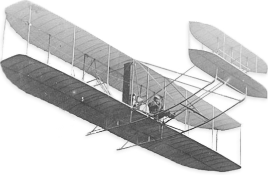

AIRLINER
항공사고
항공안전
항공상식
항공언어

최초의 비행기에 대한 기본적인 원리와 구조는
레오나르도 다빈치(Leonardo da Vinci)가 생각해냈다.
이후 미국의 라이트 형제가 가솔린 기관을 이용해 만든 플라이어 호가
1903년 최초로 12초 동안 36m를 동력 비행하는 데 성공하였다.
제1차 세계대전을 거치면서 비행기의 성능이 급속도로 개선되기 시작했고,
지금의 대형 여객기 시대에 도래하게되었다.